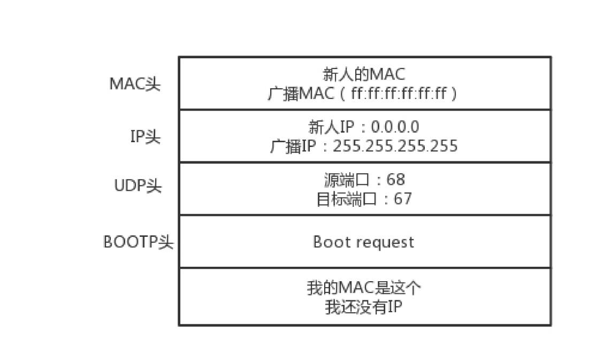

IP
IP 地址是一个网卡在网络世界的通讯地址，相当于现实世界的门牌号码。
怎么查看 IP 地址
Windows 上是 ipconfig， 在Linux 上是 ifconfig，ip addr。
一台机器包含一个或多个网卡，大部分的网卡都会有一个 IP 地址（不是必须的）。
1 | [root@VM_0_17_centos ~]# ip addr |
运行 ip addr 显示了机器的所有网卡。上面的输出，IP 地址的后面有个 scope，对于 eth0 这张网卡来讲，是 global，说明这张网卡是
可以对外的，可以接收来自各个地方的包。
对于 lo 来讲，是 host，说明这张网卡仅仅可以供本机相互通信。lo 全称是 loopback，又称环回接口，往往会被分配到 127.0.0.1 这
个地址。这个地址用于本机通信，经过内核处理后直接返回，不会在任何网络中出现。这就是为什么你可以在浏览器通过访问 127.0.0.1 这个地址来
访问本地服务，而且一般在你本机的 host 文件，会有 127.0.0.1 localhost，这是个映射关系，访问 localhost 相当于 127.0.0.1。
MAC 地址
link/ether 52:54:00:7d:a2:a5 brd ff:ff:ff:ff:ff:ff，这个是 MAC 地址，网卡的物理地址，十六进制，6 个 byte 表示。
MAC 地址是唯一的，不会有两个网卡有相同的 MAC 地址，那么为什么不直接用 MAC 地址来进行通信？
一个网络包要从一个地方传到另一个地方，除了要有确定的地址，还需要有定位功能。IP 地址，就是用来定位的。
MAC 地址更像是身份证，是一个唯一的标识。它的唯一性设计是为了组网的时候，不同的网卡放在一个网络里面的时候，可以不用担心冲突。
从硬件角度，保证不同的网卡有不同的标识。
例如，你去杭州市网商路 599 号B 楼6 层找刘超，你在路上问路，可能被问的人不知道 B 楼是哪个，但是可以给你指网商路怎么去。但是如果你问一
个人，你知道这个身份证号的人在哪里吗？可想而知，没有人知道。
MAC 地址是有一定定位功能的，只不过范围非常有限。你可以根据 IP 地址，找到杭州市网商路 599 号 B 楼6 层，但是依然找不到我，你就可以靠吼了，
大声喊身份证 XXXX 的是哪位？我听到了，我就会站起来说，是我啊。
MAC 地址的通信范围比较小，局限在一个子网里面。例如，例如，从 192.168.0.2/24 访问 192.168.0.3/24 是可以用 MAC 地址的。一旦跨
子网，即从 192.168.0.2/24 到 192.168.1.2/24，MAC 地址就不行了，需要 IP 地址起作用了。
网络设备的状态标识
<BROADCAST,MULTICAST,UP,LOWER_UP> 是干什么的？这个叫作 net_device flags，网络设备的状态标识。
UP表示网卡处于启动的状态BROADCAST表示这个网卡有广播地址，可以发送广播包MULTICAST表示网卡可以发送多播包LOWER_UP表示L1是启动的，也即网线插着呢。MTU1500是指最大传输单元 MTU 为 1500，这是以太网的默认值。MTU 是二层MAC 层的概念。MAC 层有 MAC 的头，以太网规定连 MAC 头带
正文合起来，不允许超过 1500 个字节。正文里面有 IP 的头、TCP 的头、HTTP 的头。如果放不下，就需要分片来传输。
CIDR
32 位的 IP 地址就被分成了 5 类：

C 类地址能包含的最大主机数量只有 254 个（C 类地址只有后面 8 位表示主机号，最大数字为 255，x.x.x.255 是广播地址），现在估计一个网吧
都不够用。
B 类地址能包含的最大主机数量（65534 个）又太多了。6 万多台机器放在一个网络下面，一般的企业基本达不到这个规模，闲着的地址就是浪费。
CIDR 就是为了解决上面的问题。
五类地址中，D 类是组播地址。使用这一类地址，属于某个组的机器都能收到。这有点类似在公司里面大家都加入了一个邮件组。发送邮件，
加入这个组的都能收到。
无类型域间选路（CIDR）
CIDR，打破了原来设计的几类地址的做法，将 32 位的 IP 地址一分为二，前面是网络号，后面是主机号。上面例子中的 IP 地址：172.16.0.17/20，
这个 IP 地址中有一个斜杠，斜杠后面有个数字 20。这种地址表示形式，就是 CIDR。后面 20 的意思是，32 位中，前 20 位是网络号，后 12 位
是主机号。
伴随着 CIDR 存在的，一个是广播地址，172.16.0.255。如果发送这个地址，所有 172.16.0 网络里面的机器都可以收到。另一个
是子网掩码，255.255.255.0。将子网掩码和IP 地址进行 AND 计算，就可得到网络号。
公有 IP 地址和私有 IP 地址
在日常的工作中，几乎不用划分 A 类、B 类或者 C 类，所以时间长了，很多人就忘记了这个分类，而只记得 CIDR。但是有一点还是要注意的，
就是公有 IP 地址和私有 IP 地址。

表格最右列是私有 IP 地址段。平时我们看到的数据中心里，办公室、家里或学校的 IP 地址，一般都是私有 IP 地址段。因为这些地址允许组织内
部的 IT 人员自己管理、自己分配，而且可以重复。
这就像每个小区有自己的楼编号和门牌号，你们小区可以叫 6 栋，我们小区也叫 6 栋，没有任何问题。但是一旦出了小区，就需要使用公有 IP 地址。
192.168.0.x 是最常用的私有 IP 地址。一般你家里地上网设备不会超过 254 个，所以 /24 基本就够了。那么 192.168.0 就是网络号，
整个网络里面的第一个地址 192.168.0.1，一般都是网关地址，比如你家的路由器。192.168.0.255 就是广播地址。一旦发送这个
地址，整个 192.168.0 网络里面的所有机器都能收到。
一个容易“犯错”的 CIDR
16.158.165.91/22 这个 CIDR。求一下这个网络的第一个地址、子网掩码和广播地址。
要是上来就写 16.158.165.1，那就大错特错了。
/22 不是 8 的整数倍，不好办，只能先变成二进制来看。16.158 的部分不会动，它占了前 16 位。中间的 165，变为二进制为 10100101。
除了前面的 16 位，还剩 6 位。所以，这 8 位中前 6 位是网络号，16.158.<101001>，而 <01>.91 是机器号。第一个地址
是 16.158.<101001><00>.1，即 16.158.164.1。
子网掩码是 255.255.<111111><00>.0，即 255.255.252.0。广播地址为 16.158.<101001><11>.255，即 16.158.167.255。
DHCP：IP 是怎么来的，又是怎么没的？
如何配置 IP 地址
命令行自己配置一个地址。可以使用 ifconfig，也可以使用 ip addr。设置好了以后，用这两个命令，将网卡 up 一下，就可以开始工作了。
但是不能随便配置，例如 192.168.1.6 就在你这台机器的旁边，甚至是在同一个交换机上，而你把机器的地址设为了 16.158.23.6。在这台
机器上，你企图去 ping 192.168.1.6，你看着它有自己的源 IP 地址 16.158.23.6，也有目标 IP 地址 192.168.1.6，但是包发不出去，
这是因为 MAC 层还没填。IP 只有是一个网段的，它才会发送 ARP 请求，获取 MAC 地址。如果不是，它便不会直接将包发送到网络上，而是
企图将包发送到网关。
如果你配置了网关的话，Linux 会获取网关的 MAC 地址，然后将包发出去。对于 192.168.1.6 这台机器来讲，虽然路过它家门的这个包，
目标 IP 是它，但是无奈 MAC 地址不是它的，所以它的网卡是不会把包收进去的。如果没有配置网关，那包压根就发不出去。
网关要和当前的网络至少一个网卡是同一个网段的，否则不会配置成功。
动态主机配置协议（DHCP）
有了 DHCP 协议，网络管理员只需要配置一段共享的 IP 地址。每一台新接入的机器都通过 DHCP 协议，来这个共享的 IP 地址里申请，然后自动配
置好就可以了。等人走了，或者用完了，还回去，这样其他的机器也能用。
如果是数据中心里面的服务器，IP 一旦配置好，基本不会变，这就相当于买房自己装修。 DHCP 的方式就相当于租房。你不用装修，都是帮你配
置好的。你暂时用一下，用完退租就可以了。
DHCP 的工作方式
一台机器新加入一个网络的时候，只知道自己的 MAC 地址。怎么办？先吼一句，我来啦，有人吗？这时候的沟通基本靠“吼”。这一步，
称为DHCP Discover。
第一步：
新来的机器使用 IP 地址 0.0.0.0 发送了一个广播包，目的 IP 地址为 255.255.255.255。

第二步：
DHCP Server 立刻能知道来了一个“新人”，这个时候，我们可以体会 MAC 地址唯一的重要性了。当一台机器带着自己的 MAC 地址加入一个网络
的时候，MAC 是它唯一的身份，如果连这个都重复了，就没办法配置了。只有 MAC 唯一，IP 管理员才能知道这是一个新人。租给它一个 IP 地址，
这个过程我们称为 DHCP Offer。同时，DHCP Server 为此客户保留为它提供的 IP 地址，从而不会为其他 DHCP 客户分配此 IP 地址。
DHCP Offer 里面有新的分配的地址：
DHCP Server 仍然使用广播地址作为目的地址，因为，此时请求分配 IP 的新人还没有自己的 IP。
第三步：
如果有多个 DHCP Server，这台新机器会收到多个 IP 地址，选择其中一个 DHCP Offer，一般是最先到达的那个。并且会向网络发送一
个 DHCP Request 广播数据包，包中包含客户端的 MAC 地址、接受的租约中的 IP 地址、提供此租约的 DHCP 服务器地址等，并告诉所
有 DHCP Server 它将接受哪一台服务器提供的 IP 地址，告诉其他 DHCP 服务器请求撤销它们提供的 IP 地址，以便提供给下一个 IP 租用请求者。
由于还没有得到 DHCP Server 的最后确认，客户端仍然使用 0.0.0.0 为源 IP 地址、255.255.255.255 为目标地址进行广播。
第四步：
DHCP Server 接收到客户机的 DHCP request 之后，会广播返回给客户机一个 DHCP ACK 消息包，表明已经接受客户机的选择，并将这一 IP 地址
的合法租用信息和其他的配置信息都放入该广播包，发给客户机，欢迎它加入网络大家庭。

IP 地址的收回和续租
客户机会在租期过去 50% 的时候，直接向为其提供 IP 地址的 DHCP Server 发送 DHCP request 消息包。客户机接收到该服务器回应
的 DHCP ACK 消息包，会根据包中所提供的新的租期以及其他已经更新的 TCP/IP 参数，更新自己的配置。这样，IP 租用更新就完成了。